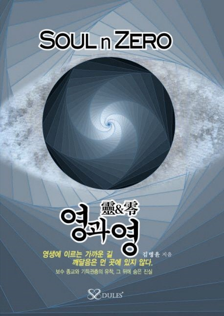

2012
『영과 영 (Soul & Zero)』
존재의 근원과 구조를 다시 묻기 시작한 첫 정리. 종교적 언어를 ‘검증 가능한 질문’으로 되돌린다.
세 권의 저서와 영상에 흩어진 사유를 한 흐름으로 모아, 제1차의 문제의식과 출발점을 정리합니다.

존재의 근원과 구조를 다시 묻기 시작한 첫 정리. 종교적 언어를 ‘검증 가능한 질문’으로 되돌린다.

성서를 ‘권위의 문서’가 아니라 ‘검증의 대상’으로 놓고, 텍스트 내부의 긴장과 구조를 추적한다.
사후세계의 신화를 해체하고, 전이 구조를 통해 종교가 회피해 온 질문을 다시 현실로 끌어온다.
나는 초등학교 5학년 때 처음으로 이런 질문을 던졌다. 우리는 어디에서 왔는가? 삶은 왜 시작되며, 죽음은 어디로 이어지는가? 신은 존재하는가, 아니면 인간이 만들어낸 개념인가? 이 질문은 단순한 호기심이 아니라, 설명되지 않는 것에 대한 근본적 의문이었다. 나는 “믿음”으로 답을 받기보다, 스스로 이해할 수 있는 설명을 원했다.
2확신이 아니라 질문의 심화1976년, 나는 내 삶의 흐름을 바꿔 놓은 하나의 사건을 겪었다. 많은 사람들은 종교적 체험을 통해 “확신”을 얻었다고 말하지만, 내게 그 사건은 오히려 질문을 더 깊게 만들었다. 나는 어떤 계시를 받았다고 선언하지 않았다. 대신, 기존 종교가 말하는 신과 인간, 사후세계의 구조를 처음부터 다시 검토해야 한다는 생각이 강해졌다. 그 사건은 믿음의 강화가 아니라, 검증의 시작이었다.
3존재 구조에 대한 첫 정리 — 『영과 영』(2012)수십 년의 사유는 2012년 『영과 영(Soul & Zero)』으로 처음 정리되었다. 이 책은 특정 종교를 옹호하기 위한 것이 아니라, 존재의 근원과 구조를 다시 묻기 위한 작업이었다. 나는 종교적 언어와 철학적 개념을 교차 검토하며, 신앙과 이성이 분리되어야 할 이유가 없다는 점을 강조했다. 종교가 진리라면, 논리적 검증을 견뎌야 한다는 것이 출발점이었다.
4성서 검증으로의 확장 — 『하나님과의 대화』(2022)2022년 『하나님과의 대화』에서는 성서 텍스트 자체를 검토 대상으로 삼았다. 엘로힘과 여호와의 차이, 구약과 신약의 긴장, 교리 형성의 역사적 배경 등을 분석하며, 성서를 “권위의 문서”가 아니라 “검증의 대상”으로 다루었다. 성서를 읽지 않는 신앙은 신앙이 아니라 관습에 가깝다. 종교가 진리라면, 텍스트는 질문을 허용해야 한다.
5사후세계 신화의 재구성 — 『무유(Nosome)』(2024)2024년 『무유(Nosome)』에서는 기존 종교가 말해 온 사후세계 개념을 근본적으로 재해석했다. 천국과 지옥이라는 이분법적 구조 대신, 존재의 전이 구조를 제시하며 “신화적 사후세계” 개념을 해체했다. 이것은 종교를 부정하기 위한 작업이 아니라, 오히려 성현들의 가르침이 왜곡 없이 이해되도록 되돌리기 위한 시도였다.
6왜 지금 다시 묻는가오늘날 종교는 여전히 권위를 유지하고 있지만, 그 권위는 종종 검증을 회피하는 방식으로 작동한다. 모순은 신비로 덮이고, 질문은 불경으로 간주된다. 나는 이 시리즈를 통해 “믿으라”고 말하지 않는다. 읽고, 비교하고, 검증하라고 요청한다. 만약 종교가 진리라면 질문을 두려워할 이유가 없다. 그리고 바로 그 지점에서, 제1차 “종교혁명”은 시작된다.
“영과 영은 제목부터 심상치 않다. 방대한 종교 주제를 다루며 비판적 시각을 제시한다.”
“저자는 마르크스가 『자본론』을 쓴 노력을 능가할 열정으로 성서를 분석했다.”